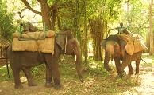
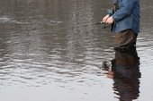
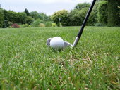

Baby Cottage
Boating and white water rafting in Coorg

Boating in coorg
For many people, boating is a great way to escape the daily routine. There seems to be a calming effect while boating out on the waters while being surrounded by nature. Whether you're going on a fishing trip or taking your sweetheart to a romantic getaway, it is the perfect way to spend the day. Boating in Coorg is truly exiting. Sailing through the nature amisdst the tossing green is bliss in itself. Small boats for two or four are available in Nisargadam. Boating is also available in Dubare forest where you can see Elephants taking bath nearby. These days few plantation-stays also provide boating facility for a very nominal fee (however prior permission is to be taken).
White water RaftingWhite water rafting in Coorg is ideal for first timers and adventure lovers. The stunning scenery is an added merit for your rafting action. Coorg Rivers are well suited for easy rafting and provides an ideal setting for an easy float trip down the calm and pristine waters. You determine your level of involvement in the water; you can paddle, swim, or simply lay back and admire the landscape float by as you leisurely drift downstream.
Location: Dubare Forest, Nisargadama and few Plantation-Stays
Elephant Back Ride
Indian elephant back rides are taken both in the early morning and in the afternoon. Being up close to an elephant in the bush is a moving experience but being on top of one is an ideal way to be a part of the wild, and see it from best advantage.
Each Elephant's personal groom (Mahooth) provides a wealth of knowledge of these magnificent mammals from their own first-hand experience. Put this on your MUST DO list of activities. Both Cauvery Nisargadham and Nagarhole is abundant in both bird and animal life. Although game sightings cannot be guaranteed, there is a good chance of seeing wildbuffalo, Deer, bushbuck, rabbit, elephants, pecock and other species of wildlife as well as a variety of birds. Tigers are rarely seen and if you find one you are very lucky!
Location: Nisargadama and Dubare Forest.
Fishing in Coorg
The Valnur fishing camp, on the banks of River Cauvery near Kushalnagar, is an ideal place for all the fishing enthusiasts. Fishing permits can be obtained from the Coorg Wildlife Society. Wide range of fishes can be found here. Variety of birds can also be seen here.
Note:Do not attempt fishing without a fishishing license that can be obtained from the Coorg Wildlife Society. Homestay/Plantation-stay/hotels normally assist their customers to get the license.
Location: Valnoor Fishing Camp near Kushalanagar and few plantation-stays
Golf Ground
Whether you’re planning to make golf the focus of your holiday, or simply want to keep your hand in with a quick half-day on the greens, you’ll enjoy the scenic beauty and public accessibility of Coorg’s golfing landscapes. Golf ground/course of Coorg are very much picturesque. Hence it is a known location for film shooting, mainly dance sequences.
Two best golf coarses are located in Mercara and Polibetta. Both Madikeri and Polibetta has a 9-hole golf course residing amidst calm serene and a splendid surrounding.
Location: Mercara City,Polibetta,Bittangala